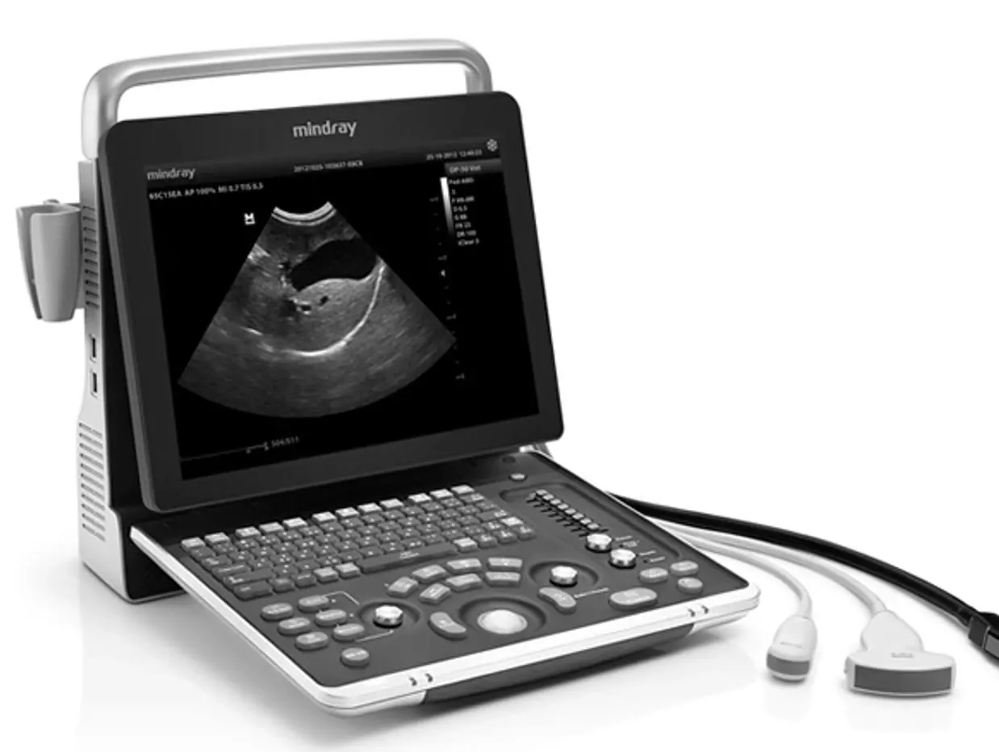

vet pro-key 75
vet pro-key 75 gives you our sharpest image in a scanner built for daily clinical work: durable, reliable and easy to keep clean.
- Works where you do: on the optional stand or without it
- Wide-angle display with an anti-reflection coating stays readable in any light
- The functions you use most are always within reach, with a trackpad and select button for precise navigation
- Low-profile snap-dome keys with a clear click that wipe clean easily
- Silicone keypad sealed to the edge: liquids stay out and disinfection is simple
- Ready to scan in under 25 seconds from a cold start